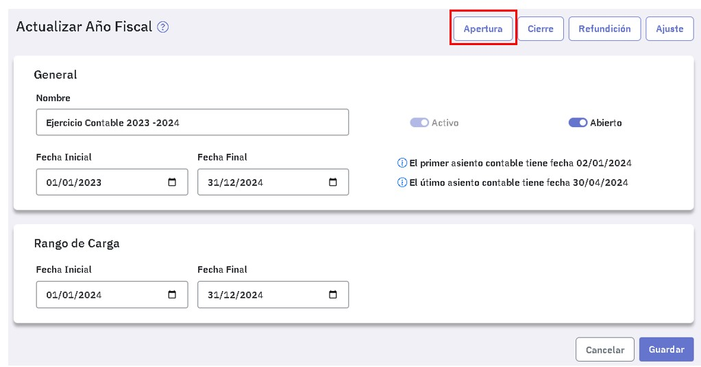
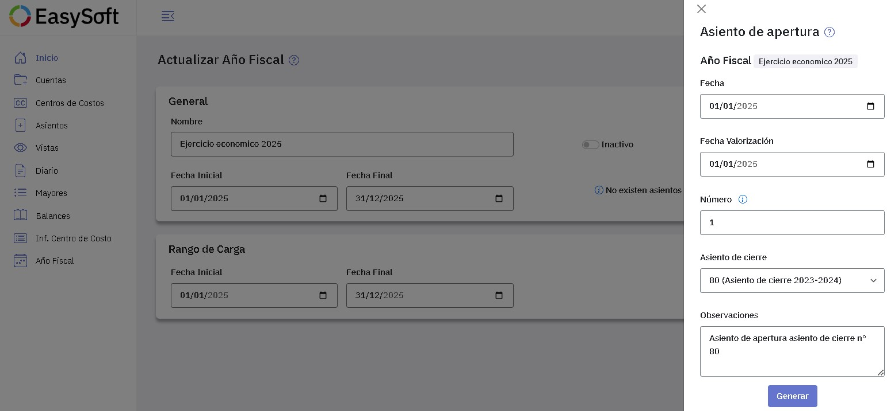
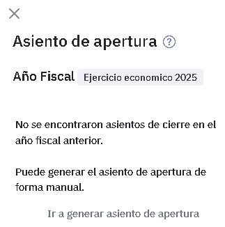
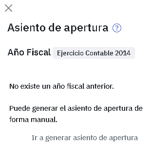

Asientos de apertura
Los asientos de apertura correspondientes a un año fiscal se generan en forma automática, dicho año fiscal tiene que estar abierto y activo. No obstante, también pueden registrarse en forma manual, desde el menú "Asientos", indicando en el campo "Tipo", "Apertura".
Lo habitual es generarlos en forma automática, eventualmente luego podrás modificarlos desde el menú "Asientos".
La generación en forma automática, se hace en base al o a los asientos de cierre del ejercicio inmediato anterior. Para ello ingresá a "Año fiscal" y editá el ejercicio económico donde lo vas a incorporar:

Luego presioná  .
.

Tenés que completar los datos de la ventana "Asiento de apertura", con la fecha del asiento, la fecha de valorización y el número. En este caso te ofrece el primero disponible.

En "Asiento de cierre" podés consultar todos los asientos de cierre registrados en el ejercicio anterior y seleccionar el que corresponde al asiento de apertura.
En "Observaciones" te ofrece un texto que podés modificar a tu gusto.
En caso que no se encuentre un asiento de cierre en el ejercicio anterior, al intentar generar el asiento de apertura verás el siguiente mensaje:

Si en el ejercicio anterior generaste más de un asiento de cierre, podés generar tantos asientos de apertura como asientos de cierre hayas generado.
En caso que intentes generar un asiento de apertura en un ejercicio económico para el cual en Easysoft no existe un ejercicio económico anterior, y por ende, tampoco un asiento de cierre en base al cual generarlo, veras el siguiente mensaje:

Si aun no estás en condiciones de generar el asiento de apertura por no haber finalizado la registración en el ejercicio anterior, podes trabajar en ambos ejercicios en simultáneo, consultá Como trabajar en un ejercicio sin cerrar el anterior.